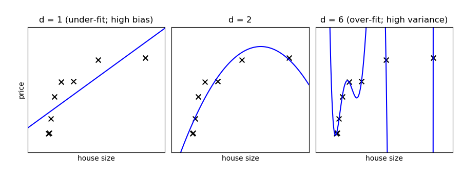

3.6. scikit-learn: machine learning in Python¶
Authors: Gael Varoquaux
Prerequisites
See also
Data science in Python
- The Statistics in Python chapter may also be of interest for readers looking into machine learning.
- The documentation of scikit-learn is very complete and didactic.
Chapters contents
- Introduction: problem settings
- Basic principles of machine learning with scikit-learn
- Supervised Learning: Classification of Handwritten Digits
- Supervised Learning: Regression of Housing Data
- Measuring prediction performance
- Unsupervised Learning: Dimensionality Reduction and Visualization
- The eigenfaces example: chaining PCA and SVMs
- The eigenfaces example: chaining PCA and SVMs
- Parameter selection, Validation, and Testing
- Examples for the scikit-learn chapter
3.6.1. Introduction: problem settings¶
3.6.1.1. What is machine learning?¶
Tip
Machine Learning is about building programs with tunable parameters that are adjusted automatically so as to improve their behavior by adapting to previously seen data.
Machine Learning can be considered a subfield of Artificial Intelligence since those algorithms can be seen as building blocks to make computers learn to behave more intelligently by somehow generalizing rather that just storing and retrieving data items like a database system would do.
A classification problem
We’ll take a look at two very simple machine learning tasks here. The first is a classification task: the figure shows a collection of two-dimensional data, colored according to two different class labels. A classification algorithm may be used to draw a dividing boundary between the two clusters of points:
By drawing this separating line, we have learned a model which can generalize to new data: if you were to drop another point onto the plane which is unlabeled, this algorithm could now predict whether it’s a blue or a red point.
A regression problem
The next simple task we’ll look at is a regression task: a simple best-fit line to a set of data.
Again, this is an example of fitting a model to data, but our focus here is that the model can make generalizations about new data. The model has been learned from the training data, and can be used to predict the result of test data: here, we might be given an x-value, and the model would allow us to predict the y value.
3.6.1.2. Data in scikit-learn¶
The data matrix¶
Machine learning algorithms implemented in scikit-learn expect data
to be stored in a two-dimensional array or matrix. The arrays can be
either numpy arrays, or in some cases scipy.sparse matrices. The
size of the array is expected to be [n_samples, n_features]
- n_samples: The number of samples: each sample is an item to process (e.g. classify). A sample can be a document, a picture, a sound, a video, an astronomical object, a row in database or CSV file, or whatever you can describe with a fixed set of quantitative traits.
- n_features: The number of features or distinct traits that can be used to describe each item in a quantitative manner. Features are generally real-valued, but may be boolean or discrete-valued in some cases.
Tip
The number of features must be fixed in advance. However it can be
very high dimensional (e.g. millions of features) with most of them
being zeros for a given sample. This is a case where scipy.sparse
matrices can be useful, in that they are much more memory-efficient
than numpy arrays.
A Simple Example: the Iris Dataset¶
The application problem¶
As an example of a simple dataset, let us a look at the iris data stored by scikit-learn. Suppose we want to recognize species of irises. The data consists of measurements of three different species of irises:
 |
 |
 |
|---|---|---|
| Setosa Iris | Versicolor Iris | Virginica Iris |
Quick Question:
If we want to design an algorithm to recognize iris species, what might the data be?
Remember: we need a 2D array of size
[n_samples x n_features].
- What would the
n_samplesrefer to?- What might the
n_featuresrefer to?
Remember that there must be a fixed number of features for each
sample, and feature number i must be a similar kind of quantity for
each sample.
Loading the Iris Data with Scikit-learn¶
Scikit-learn has a very straightforward set of data on these iris species. The data consist of the following:
- Features in the Iris dataset:
- sepal length (cm)
- sepal width (cm)
- petal length (cm)
- petal width (cm)
- Target classes to predict:
- Setosa
- Versicolour
- Virginica
scikit-learn embeds a copy of the iris CSV file along with a
function to load it into numpy arrays:
>>> from sklearn.datasets import load_iris
>>> iris = load_iris()
Note
Import sklearn Note that scikit-learn is imported as sklearn
The features of each sample flower are stored in the data attribute
of the dataset:
>>> print(iris.data.shape)
(150, 4)
>>> n_samples, n_features = iris.data.shape
>>> print(n_samples)
150
>>> print(n_features)
4
>>> print(iris.data[0])
[5.1 3.5 1.4 0.2]
The information about the class of each sample is stored in the
target attribute of the dataset:
>>> print(iris.target.shape)
(150,)
>>> print(iris.target)
[0 0 0 0 0 0 0 0 0 0 0 0 0 0 0 0 0 0 0 0 0 0 0 0 0 0 0 0 0 0 0 0 0 0 0 0 0
0 0 0 0 0 0 0 0 0 0 0 0 0 1 1 1 1 1 1 1 1 1 1 1 1 1 1 1 1 1 1 1 1 1 1 1 1
1 1 1 1 1 1 1 1 1 1 1 1 1 1 1 1 1 1 1 1 1 1 1 1 1 1 2 2 2 2 2 2 2 2 2 2 2
2 2 2 2 2 2 2 2 2 2 2 2 2 2 2 2 2 2 2 2 2 2 2 2 2 2 2 2 2 2 2 2 2 2 2 2 2
2 2]
The names of the classes are stored in the last attribute, namely
target_names:
>>> print(iris.target_names)
['setosa' 'versicolor' 'virginica']
This data is four-dimensional, but we can visualize two of the dimensions at a time using a scatter plot:

Exercise:
Can you choose 2 features to find a plot where it is easier to seperate the different classes of irises?
Hint: click on the figure above to see the code that generates it, and modify this code.
3.6.2. Basic principles of machine learning with scikit-learn¶
3.6.2.1. Introducing the scikit-learn estimator object¶
Every algorithm is exposed in scikit-learn via an ‘’Estimator’’ object.
For instance a linear regression is: sklearn.linear_model.LinearRegression
>>> from sklearn.linear_model import LinearRegression
Estimator parameters: All the parameters of an estimator can be set when it is instantiated:
>>> model = LinearRegression(n_jobs=1, normalize=True)
>>> print(model.normalize)
True
>>> print(model)
LinearRegression(n_jobs=1, normalize=True)
Fitting on data¶
Let’s create some simple data with numpy:
>>> import numpy as np
>>> x = np.array([0, 1, 2])
>>> y = np.array([0, 1, 2])
>>> X = x[:, np.newaxis] # The input data for sklearn is 2D: (samples == 3 x features == 1)
>>> X
array([[0],
[1],
[2]])
>>> model.fit(X, y)
LinearRegression(n_jobs=1, normalize=True)
Estimated parameters: When data is fitted with an estimator, parameters are estimated from the data at hand. All the estimated parameters are attributes of the estimator object ending by an underscore:
>>> model.coef_
array([1.])
3.6.2.2. Supervised Learning: Classification and regression¶
In Supervised Learning, we have a dataset consisting of both features and labels. The task is to construct an estimator which is able to predict the label of an object given the set of features. A relatively simple example is predicting the species of iris given a set of measurements of its flower. This is a relatively simple task. Some more complicated examples are:
- given a multicolor image of an object through a telescope, determine whether that object is a star, a quasar, or a galaxy.
- given a photograph of a person, identify the person in the photo.
- given a list of movies a person has watched and their personal rating of the movie, recommend a list of movies they would like (So-called recommender systems: a famous example is the Netflix Prize).
Tip
What these tasks have in common is that there is one or more unknown quantities associated with the object which needs to be determined from other observed quantities.
Supervised learning is further broken down into two categories, classification and regression. In classification, the label is discrete, while in regression, the label is continuous. For example, in astronomy, the task of determining whether an object is a star, a galaxy, or a quasar is a classification problem: the label is from three distinct categories. On the other hand, we might wish to estimate the age of an object based on such observations: this would be a regression problem, because the label (age) is a continuous quantity.
Classification: K nearest neighbors (kNN) is one of the simplest learning strategies: given a new, unknown observation, look up in your reference database which ones have the closest features and assign the predominant class. Let’s try it out on our iris classification problem:
from sklearn import neighbors, datasets
iris = datasets.load_iris()
X, y = iris.data, iris.target
knn = neighbors.KNeighborsClassifier(n_neighbors=1)
knn.fit(X, y)
# What kind of iris has 3cm x 5cm sepal and 4cm x 2cm petal?
print(iris.target_names[knn.predict([[3, 5, 4, 2]])])

A plot of the sepal space and the prediction of the KNN
Regression: The simplest possible regression setting is the linear regression one:
from sklearn.linear_model import LinearRegression
# x from 0 to 30
x = 30 * np.random.random((20, 1))
# y = a*x + b with noise
y = 0.5 * x + 1.0 + np.random.normal(size=x.shape)
# create a linear regression model
model = LinearRegression()
model.fit(x, y)
# predict y from the data
x_new = np.linspace(0, 30, 100)
y_new = model.predict(x_new[:, np.newaxis])
3.6.2.3. A recap on Scikit-learn’s estimator interface¶
Scikit-learn strives to have a uniform interface across all methods, and
we’ll see examples of these below. Given a scikit-learn estimator
object named model, the following methods are available:
| In all Estimators: | |
|---|---|
|
|
| In supervised estimators: | |
|
|
| In unsupervised estimators: | |
|
|
3.6.2.4. Regularization: what it is and why it is necessary¶
Prefering simpler models¶
Train errors Suppose you are using a 1-nearest neighbor estimator. How many errors do you expect on your train set?
- Train set error is not a good measurement of prediction performance. You need to leave out a test set.
- In general, we should accept errors on the train set.
An example of regularization The core idea behind regularization is that we are going to prefer models that are simpler, for a certain definition of ‘’simpler’’, even if they lead to more errors on the train set.
As an example, let’s generate with a 9th order polynomial, with noise:
And now, let’s fit a 4th order and a 9th order polynomial to the data.
With your naked eyes, which model do you prefer, the 4th order one, or the 9th order one?
Let’s look at the ground truth:
Tip
Regularization is ubiquitous in machine learning. Most scikit-learn estimators have a parameter to tune the amount of regularization. For instance, with k-NN, it is ‘k’, the number of nearest neighbors used to make the decision. k=1 amounts to no regularization: 0 error on the training set, whereas large k will push toward smoother decision boundaries in the feature space.
Simple versus complex models for classification¶
 |
 |
|---|---|
| A linear separation | A non-linear separation |
Tip
For classification models, the decision boundary, that separates the class expresses the complexity of the model. For instance, a linear model, that makes a decision based on a linear combination of features, is more complex than a non-linear one.
3.6.3. Supervised Learning: Classification of Handwritten Digits¶
3.6.3.1. The nature of the data¶
In this section we’ll apply scikit-learn to the classification of handwritten digits. This will go a bit beyond the iris classification we saw before: we’ll discuss some of the metrics which can be used in evaluating the effectiveness of a classification model.
>>> from sklearn.datasets import load_digits
>>> digits = load_digits()

Let us visualize the data and remind us what we’re looking at (click on the figure for the full code):
# plot the digits: each image is 8x8 pixels
for i in range(64):
ax = fig.add_subplot(8, 8, i + 1, xticks=[], yticks=[])
ax.imshow(digits.images[i], cmap=plt.cm.binary, interpolation='nearest')
3.6.3.2. Visualizing the Data on its principal components¶
A good first-step for many problems is to visualize the data using a Dimensionality Reduction technique. We’ll start with the most straightforward one, Principal Component Analysis (PCA).
PCA seeks orthogonal linear combinations of the features which show the greatest variance, and as such, can help give you a good idea of the structure of the data set.
>>> from sklearn.decomposition import PCA
>>> pca = PCA(n_components=2)
>>> proj = pca.fit_transform(digits.data)
>>> plt.scatter(proj[:, 0], proj[:, 1], c=digits.target)
<matplotlib.collections.PathCollection object at ...>
>>> plt.colorbar()
<matplotlib.colorbar.Colorbar object at ...>

Question
Given these projections of the data, which numbers do you think a classifier might have trouble distinguishing?
3.6.3.3. Gaussian Naive Bayes Classification¶
For most classification problems, it’s nice to have a simple, fast method to provide a quick baseline classification. If the simple and fast method is sufficient, then we don’t have to waste CPU cycles on more complex models. If not, we can use the results of the simple method to give us clues about our data.
One good method to keep in mind is Gaussian Naive Bayes
(sklearn.naive_bayes.GaussianNB).
Tip
Gaussian Naive Bayes fits a Gaussian distribution to each training label independantly on each feature, and uses this to quickly give a rough classification. It is generally not sufficiently accurate for real-world data, but can perform surprisingly well, for instance on text data.
>>> from sklearn.naive_bayes import GaussianNB
>>> from sklearn.model_selection import train_test_split
>>> # split the data into training and validation sets
>>> X_train, X_test, y_train, y_test = train_test_split(digits.data, digits.target)
>>> # train the model
>>> clf = GaussianNB()
>>> clf.fit(X_train, y_train)
GaussianNB()
>>> # use the model to predict the labels of the test data
>>> predicted = clf.predict(X_test)
>>> expected = y_test
>>> print(predicted)
[1 7 7 7 8 2 8 0 4 8 7 7 0 8 2 3 5 8 5 3 7 9 6 2 8 2 2 7 3 5...]
>>> print(expected)
[1 0 4 7 8 2 2 0 4 3 7 7 0 8 2 3 4 8 5 3 7 9 6 3 8 2 2 9 3 5...]
As above, we plot the digits with the predicted labels to get an idea of how well the classification is working.

Question
Why did we split the data into training and validation sets?
3.6.3.4. Quantitative Measurement of Performance¶
We’d like to measure the performance of our estimator without having to resort to plotting examples. A simple method might be to simply compare the number of matches:
>>> matches = (predicted == expected)
>>> print(matches.sum())
367
>>> print(len(matches))
450
>>> matches.sum() / float(len(matches))
0.81555555555555559
We see that more than 80% of the 450 predictions match the input. But
there are other more sophisticated metrics that can be used to judge the
performance of a classifier: several are available in the
sklearn.metrics submodule.
One of the most useful metrics is the classification_report, which
combines several measures and prints a table with the results:
>>> from sklearn import metrics
>>> print(metrics.classification_report(expected, predicted))
precision recall f1-score support
0 1.00 0.91 0.95 46
1 0.76 0.64 0.69 44
2 0.85 0.62 0.72 47
3 0.98 0.82 0.89 49
4 0.89 0.86 0.88 37
5 0.97 0.93 0.95 41
6 1.00 0.98 0.99 44
7 0.73 1.00 0.84 45
8 0.50 0.90 0.64 49
9 0.93 0.54 0.68 48
accuracy 0.82 450
macro avg 0.86 0.82 0.82 450
weighted avg 0.86 0.82 0.82 450
Another enlightening metric for this sort of multi-label classification is a confusion matrix: it helps us visualize which labels are being interchanged in the classification errors:
>>> print(metrics.confusion_matrix(expected, predicted))
[[42 0 0 0 3 0 0 1 0 0]
[ 0 28 0 0 0 0 0 1 13 2]
[ 0 3 29 0 0 0 0 0 15 0]
[ 0 0 2 40 0 0 0 2 5 0]
[ 0 0 1 0 32 1 0 3 0 0]
[ 0 0 0 0 0 38 0 2 1 0]
[ 0 0 1 0 0 0 43 0 0 0]
[ 0 0 0 0 0 0 0 45 0 0]
[ 0 3 1 0 0 0 0 1 44 0]
[ 0 3 0 1 1 0 0 7 10 26]]
We see here that in particular, the numbers 1, 2, 3, and 9 are often being labeled 8.
3.6.4. Supervised Learning: Regression of Housing Data¶
Here we’ll do a short example of a regression problem: learning a continuous value from a set of features.
3.6.4.1. A quick look at the data¶
We’ll use the California house prices set, available in scikit-learn. This records measurements of 8 attributes of housing markets in California, as well as the median price. The question is: can you predict the price of a new market given its attributes?:
>>> from sklearn.datasets import fetch_california_housing
>>> data = fetch_california_housing(as_frame=True)
>>> print(data.data.shape)
(20640, 8)
>>> print(data.target.shape)
(20640,)
We can see that there are just over 20000 data points.
The DESCR variable has a long description of the dataset:
>>> print(data.DESCR)
.. _california_housing_dataset:
California Housing dataset
--------------------------
**Data Set Characteristics:**
:Number of Instances: 20640
:Number of Attributes: 8 numeric, predictive attributes and the target
:Attribute Information:
- MedInc median income in block
- HouseAge median house age in block
- AveRooms average number of rooms
- AveBedrms average number of bedrooms
- Population block population
- AveOccup average house occupancy
- Latitude house block latitude
- Longitude house block longitude
:Missing Attribute Values: None
This dataset was obtained from the StatLib repository.
http://lib.stat.cmu.edu/datasets/
The target variable is the median house value for California districts.
This dataset was derived from the 1990 U.S. census, using one row per census
block group. A block group is the smallest geographical unit for which the U.S.
Census Bureau publishes sample data (a block group typically has a population
of 600 to 3,000 people).
It can be downloaded/loaded using the
:func:`sklearn.datasets.fetch_california_housing` function.
.. topic:: References
- Pace, R. Kelley and Ronald Barry, Sparse Spatial Autoregressions,
Statistics and Probability Letters, 33 (1997) 291-297
It often helps to quickly visualize pieces of the data using histograms, scatter plots, or other plot types. With matplotlib, let us show a histogram of the target values: the median price in each neighborhood:
>>> plt.hist(data.target)
(array([...
Let’s have a quick look to see if some features are more relevant than others for our problem:
>>> for index, feature_name in enumerate(data.feature_names):
... plt.figure()
... plt.scatter(data.data[feature_name], data.target)
<Figure size...


This is a manual version of a technique called feature selection.
Tip
Sometimes, in Machine Learning it is useful to use feature selection to decide which features are the most useful for a particular problem. Automated methods exist which quantify this sort of exercise of choosing the most informative features.
3.6.4.2. Predicting Home Prices: a Simple Linear Regression¶
Now we’ll use scikit-learn to perform a simple linear regression on
the housing data. There are many possibilities of regressors to use. A
particularly simple one is LinearRegression: this is basically a
wrapper around an ordinary least squares calculation.
>>> from sklearn.model_selection import train_test_split
>>> X_train, X_test, y_train, y_test = train_test_split(data.data, data.target)
>>> from sklearn.linear_model import LinearRegression
>>> clf = LinearRegression()
>>> clf.fit(X_train, y_train)
LinearRegression()
>>> predicted = clf.predict(X_test)
>>> expected = y_test
>>> print("RMS: %s" % np.sqrt(np.mean((predicted - expected) ** 2)))
RMS: 0.7...
We can plot the error: expected as a function of predicted:
>>> plt.scatter(expected, predicted)
<matplotlib.collections.PathCollection object at ...>
Tip
The prediction at least correlates with the true price, though there are clearly some biases. We could imagine evaluating the performance of the regressor by, say, computing the RMS residuals between the true and predicted price. There are some subtleties in this, however, which we’ll cover in a later section.
Exercise: Gradient Boosting Tree Regression
There are many other types of regressors available in scikit-learn: we’ll try a more powerful one here.
Use the GradientBoostingRegressor class to fit the housing data.
hint You can copy and paste some of the above code, replacing
LinearRegression with
GradientBoostingRegressor:
from sklearn.ensemble import GradientBoostingRegressor
# Instantiate the model, fit the results, and scatter in vs. out
Solution The solution is found in the code of this chapter
3.6.5. Measuring prediction performance¶
3.6.5.1. A quick test on the K-neighbors classifier¶
Here we’ll continue to look at the digits data, but we’ll switch to the K-Neighbors classifier. The K-neighbors classifier is an instance-based classifier. The K-neighbors classifier predicts the label of an unknown point based on the labels of the K nearest points in the parameter space.
>>> # Get the data
>>> from sklearn.datasets import load_digits
>>> digits = load_digits()
>>> X = digits.data
>>> y = digits.target
>>> # Instantiate and train the classifier
>>> from sklearn.neighbors import KNeighborsClassifier
>>> clf = KNeighborsClassifier(n_neighbors=1)
>>> clf.fit(X, y)
KNeighborsClassifier(...)
>>> # Check the results using metrics
>>> from sklearn import metrics
>>> y_pred = clf.predict(X)
>>> print(metrics.confusion_matrix(y_pred, y))
[[178 0 0 0 0 0 0 0 0 0]
[ 0 182 0 0 0 0 0 0 0 0]
[ 0 0 177 0 0 0 0 0 0 0]
[ 0 0 0 183 0 0 0 0 0 0]
[ 0 0 0 0 181 0 0 0 0 0]
[ 0 0 0 0 0 182 0 0 0 0]
[ 0 0 0 0 0 0 181 0 0 0]
[ 0 0 0 0 0 0 0 179 0 0]
[ 0 0 0 0 0 0 0 0 174 0]
[ 0 0 0 0 0 0 0 0 0 180]]
Apparently, we’ve found a perfect classifier! But this is misleading for the reasons we saw before: the classifier essentially “memorizes” all the samples it has already seen. To really test how well this algorithm does, we need to try some samples it hasn’t yet seen.
This problem also occurs with regression models. In the following we fit an other instance-based model named “decision tree” to the California Housing price dataset we introduced previously:
>>> from sklearn.datasets import fetch_california_housing
>>> from sklearn.tree import DecisionTreeRegressor
>>> data = fetch_california_housing(as_frame=True)
>>> clf = DecisionTreeRegressor().fit(data.data, data.target)
>>> predicted = clf.predict(data.data)
>>> expected = data.target
>>> plt.scatter(expected, predicted)
<matplotlib.collections.PathCollection object at ...>
>>> plt.plot([0, 50], [0, 50], '--k')
[<matplotlib.lines.Line2D object at ...]
Here again the predictions are seemingly perfect as the model was able to perfectly memorize the training set.
Warning
Performance on test set
Performance on test set does not measure overfit (as described above)
3.6.5.2. A correct approach: Using a validation set¶
Learning the parameters of a prediction function and testing it on the same data is a methodological mistake: a model that would just repeat the labels of the samples that it has just seen would have a perfect score but would fail to predict anything useful on yet-unseen data.
To avoid over-fitting, we have to define two different sets:
- a training set X_train, y_train which is used for learning the parameters of a predictive model
- a testing set X_test, y_test which is used for evaluating the fitted predictive model
In scikit-learn such a random split can be quickly computed with the
train_test_split() function:
>>> from sklearn import model_selection
>>> X = digits.data
>>> y = digits.target
>>> X_train, X_test, y_train, y_test = model_selection.train_test_split(X, y,
... test_size=0.25, random_state=0)
>>> print("%r, %r, %r" % (X.shape, X_train.shape, X_test.shape))
(1797, 64), (1347, 64), (450, 64)
Now we train on the training data, and test on the testing data:
>>> clf = KNeighborsClassifier(n_neighbors=1).fit(X_train, y_train)
>>> y_pred = clf.predict(X_test)
>>> print(metrics.confusion_matrix(y_test, y_pred))
[[37 0 0 0 0 0 0 0 0 0]
[ 0 43 0 0 0 0 0 0 0 0]
[ 0 0 43 1 0 0 0 0 0 0]
[ 0 0 0 45 0 0 0 0 0 0]
[ 0 0 0 0 38 0 0 0 0 0]
[ 0 0 0 0 0 47 0 0 0 1]
[ 0 0 0 0 0 0 52 0 0 0]
[ 0 0 0 0 0 0 0 48 0 0]
[ 0 0 0 0 0 0 0 0 48 0]
[ 0 0 0 1 0 1 0 0 0 45]]
>>> print(metrics.classification_report(y_test, y_pred))
precision recall f1-score support
0 1.00 1.00 1.00 37
1 1.00 1.00 1.00 43
2 1.00 0.98 0.99 44
3 0.96 1.00 0.98 45
4 1.00 1.00 1.00 38
5 0.98 0.98 0.98 48
6 1.00 1.00 1.00 52
7 1.00 1.00 1.00 48
8 1.00 1.00 1.00 48
9 0.98 0.96 0.97 47
accuracy 0.99 450
macro avg 0.99 0.99 0.99 450
weighted avg 0.99 0.99 0.99 450
The averaged f1-score is often used as a convenient measure of the overall performance of an algorithm. It appears in the bottom row of the classification report; it can also be accessed directly:
>>> metrics.f1_score(y_test, y_pred, average="macro")
0.991367...
The over-fitting we saw previously can be quantified by computing the f1-score on the training data itself:
>>> metrics.f1_score(y_train, clf.predict(X_train), average="macro")
1.0
Note
Regression metrics In the case of regression models, we need to use different metrics, such as explained variance.
3.6.5.3. Model Selection via Validation¶
Tip
We have applied Gaussian Naives, support vectors machines, and K-nearest neighbors classifiers to the digits dataset. Now that we have these validation tools in place, we can ask quantitatively which of the three estimators works best for this dataset.
With the default hyper-parameters for each estimator, which gives the best f1 score on the validation set? Recall that hyperparameters are the parameters set when you instantiate the classifier: for example, the
n_neighborsinclf = KNeighborsClassifier(n_neighbors=1)>>> from sklearn.naive_bayes import GaussianNB >>> from sklearn.neighbors import KNeighborsClassifier >>> from sklearn.svm import LinearSVC >>> X = digits.data >>> y = digits.target >>> X_train, X_test, y_train, y_test = model_selection.train_test_split(X, y, ... test_size=0.25, random_state=0) >>> for Model in [GaussianNB, KNeighborsClassifier, LinearSVC]: ... clf = Model().fit(X_train, y_train) ... y_pred = clf.predict(X_test) ... print('%s: %s' % ... (Model.__name__, metrics.f1_score(y_test, y_pred, average="macro"))) GaussianNB: 0.8... KNeighborsClassifier: 0.9... LinearSVC: 0.9...
For each classifier, which value for the hyperparameters gives the best results for the digits data? For
LinearSVC, useloss='l2'andloss='l1'. ForKNeighborsClassifierwe usen_neighborsbetween 1 and 10. Note thatGaussianNBdoes not have any adjustable hyperparameters.LinearSVC(loss='l1'): 0.930570687535 LinearSVC(loss='l2'): 0.933068826918 ------------------- KNeighbors(n_neighbors=1): 0.991367521884 KNeighbors(n_neighbors=2): 0.984844206884 KNeighbors(n_neighbors=3): 0.986775344954 KNeighbors(n_neighbors=4): 0.980371905382 KNeighbors(n_neighbors=5): 0.980456280495 KNeighbors(n_neighbors=6): 0.975792419414 KNeighbors(n_neighbors=7): 0.978064579214 KNeighbors(n_neighbors=8): 0.978064579214 KNeighbors(n_neighbors=9): 0.978064579214 KNeighbors(n_neighbors=10): 0.975555089773
Solution: code source
3.6.5.4. Cross-validation¶
Cross-validation consists in repetively splitting the data in pairs of
train and test sets, called ‘folds’. Scikit-learn comes with a function
to automatically compute score on all these folds. Here we do
KFold with k=5.
>>> clf = KNeighborsClassifier()
>>> from sklearn.model_selection import cross_val_score
>>> cross_val_score(clf, X, y, cv=5)
array([0.947..., 0.955..., 0.966..., 0.980..., 0.963... ])
We can use different splitting strategies, such as random splitting:
>>> from sklearn.model_selection import ShuffleSplit
>>> cv = ShuffleSplit(n_splits=5)
>>> cross_val_score(clf, X, y, cv=cv)
array([...])
Tip
There exists many different cross-validation strategies in scikit-learn. They are often useful to take in account non iid datasets.
3.6.5.5. Hyperparameter optimization with cross-validation¶
Consider regularized linear models, such as Ridge Regression, which uses l2 regularlization, and Lasso Regression, which uses l1 regularization. Choosing their regularization parameter is important.
Let us set these parameters on the Diabetes dataset, a simple regression problem. The diabetes data consists of 10 physiological variables (age, sex, weight, blood pressure) measure on 442 patients, and an indication of disease progression after one year:
>>> from sklearn.datasets import load_diabetes
>>> data = load_diabetes()
>>> X, y = data.data, data.target
>>> print(X.shape)
(442, 10)
With the default hyper-parameters: we compute the cross-validation score:
>>> from sklearn.linear_model import Ridge, Lasso
>>> for Model in [Ridge, Lasso]:
... model = Model()
... print('%s: %s' % (Model.__name__, cross_val_score(model, X, y).mean()))
Ridge: 0.4...
Lasso: 0.3...
Basic Hyperparameter Optimization¶
We compute the cross-validation score as a function of alpha, the
strength of the regularization for Lasso
and Ridge. We choose 20 values of alpha
between 0.0001 and 1:
>>> alphas = np.logspace(-3, -1, 30)
>>> for Model in [Lasso, Ridge]:
... scores = [cross_val_score(Model(alpha), X, y, cv=3).mean()
... for alpha in alphas]
... plt.plot(alphas, scores, label=Model.__name__)
[<matplotlib.lines.Line2D object at ...

Question
Can we trust our results to be actually useful?
Automatically Performing Grid Search¶
sklearn.grid_search.GridSearchCV is constructed with an
estimator, as well as a dictionary of parameter values to be searched.
We can find the optimal parameters this way:
>>> from sklearn.model_selection import GridSearchCV
>>> for Model in [Ridge, Lasso]:
... gscv = GridSearchCV(Model(), dict(alpha=alphas), cv=3).fit(X, y)
... print('%s: %s' % (Model.__name__, gscv.best_params_))
Ridge: {'alpha': 0.062101694189156162}
Lasso: {'alpha': 0.01268961003167922}
Built-in Hyperparameter Search¶
For some models within scikit-learn, cross-validation can be performed
more efficiently on large datasets. In this case, a cross-validated
version of the particular model is included. The cross-validated
versions of Ridge and
Lasso are
RidgeCV and
LassoCV, respectively. Parameter search
on these estimators can be performed as follows:
>>> from sklearn.linear_model import RidgeCV, LassoCV
>>> for Model in [RidgeCV, LassoCV]:
... model = Model(alphas=alphas, cv=3).fit(X, y)
... print('%s: %s' % (Model.__name__, model.alpha_))
RidgeCV: 0.0621016941892
LassoCV: 0.0126896100317
We see that the results match those returned by GridSearchCV
Nested cross-validation¶
How do we measure the performance of these estimators? We have used data
to set the hyperparameters, so we need to test on actually new data. We
can do this by running cross_val_score()
on our CV objects. Here there are 2 cross-validation loops going on, this
is called ‘nested cross validation’:
for Model in [RidgeCV, LassoCV]:
scores = cross_val_score(Model(alphas=alphas, cv=3), X, y, cv=3)
print(Model.__name__, np.mean(scores))
3.6.6. Unsupervised Learning: Dimensionality Reduction and Visualization¶
Unsupervised learning is applied on X without y: data without labels. A typical use case is to find hidden structure in the data.
3.6.6.1. Dimensionality Reduction: PCA¶
Dimensionality reduction derives a set of new artificial features smaller
than the original feature set. Here we’ll use Principal Component
Analysis (PCA), a
dimensionality reduction that strives to retain most of the variance of
the original data. We’ll use sklearn.decomposition.PCA on the
iris dataset:
>>> X = iris.data
>>> y = iris.target
Tip
PCA computes linear combinations of
the original features using a truncated Singular Value Decomposition
of the matrix X, to project the data onto a base of the top singular
vectors.
>>> from sklearn.decomposition import PCA
>>> pca = PCA(n_components=2, whiten=True)
>>> pca.fit(X)
PCA(n_components=2, ...)
Once fitted, PCA exposes the singular
vectors in the components_ attribute:
>>> pca.components_
array([[ 0.3..., -0.08..., 0.85..., 0.3...],
[ 0.6..., 0.7..., -0.1..., -0.07...]])
Other attributes are available as well:
>>> pca.explained_variance_ratio_
array([0.92..., 0.053...])
Let us project the iris dataset along those first two dimensions::
>>> X_pca = pca.transform(X)
>>> X_pca.shape
(150, 2)
PCA normalizes and whitens the data, which means that the data
is now centered on both components with unit variance:
>>> X_pca.mean(axis=0)
array([...e-15, ...e-15])
>>> X_pca.std(axis=0, ddof=1)
array([1., 1.])
Furthermore, the samples components do no longer carry any linear correlation:
>>> np.corrcoef(X_pca.T)
array([[1.00000000e+00, 0.0],
[0.0, 1.00000000e+00]])
With a number of retained components 2 or 3, PCA is useful to visualize the dataset:
>>> target_ids = range(len(iris.target_names))
>>> for i, c, label in zip(target_ids, 'rgbcmykw', iris.target_names):
... plt.scatter(X_pca[y == i, 0], X_pca[y == i, 1],
... c=c, label=label)
<matplotlib.collections.PathCollection ...
Tip
Note that this projection was determined without any information about the labels (represented by the colors): this is the sense in which the learning is unsupervised. Nevertheless, we see that the projection gives us insight into the distribution of the different flowers in parameter space: notably, iris setosa is much more distinct than the other two species.
3.6.6.2. Visualization with a non-linear embedding: tSNE¶
For visualization, more complex embeddings can be useful (for statistical
analysis, they are harder to control). sklearn.manifold.TSNE is
such a powerful manifold learning method. We apply it to the digits
dataset, as the digits are vectors of dimension 8*8 = 64. Embedding them
in 2D enables visualization:
>>> # Take the first 500 data points: it's hard to see 1500 points
>>> X = digits.data[:500]
>>> y = digits.target[:500]
>>> # Fit and transform with a TSNE
>>> from sklearn.manifold import TSNE
>>> tsne = TSNE(n_components=2, random_state=0)
>>> X_2d = tsne.fit_transform(X)
>>> # Visualize the data
>>> plt.scatter(X_2d[:, 0], X_2d[:, 1], c=y)
<matplotlib.collections.PathCollection object at ...>
fit_transform
As TSNE cannot be applied to new data, we
need to use its fit_transform method.
sklearn.manifold.TSNE separates quite well the different classes
of digits eventhough it had no access to the class information.
Exercise: Other dimension reduction of digits
sklearn.manifold has many other non-linear embeddings. Try
them out on the digits dataset. Could you judge their quality without
knowing the labels y?
>>> from sklearn.datasets import load_digits
>>> digits = load_digits()
>>> # ...
3.6.8. The eigenfaces example: chaining PCA and SVMs¶
The goal of this example is to show how an unsupervised method and a supervised one can be chained for better prediction. It starts with a didactic but lengthy way of doing things, and finishes with the idiomatic approach to pipelining in scikit-learn.
Here we’ll take a look at a simple facial recognition example. Ideally,
we would use a dataset consisting of a subset of the Labeled Faces in
the Wild data that is available
with sklearn.datasets.fetch_lfw_people(). However, this is a
relatively large download (~200MB) so we will do the tutorial on a
simpler, less rich dataset. Feel free to explore the LFW dataset.
from sklearn import datasets
faces = datasets.fetch_olivetti_faces()
faces.data.shape
Let’s visualize these faces to see what we’re working with
from matplotlib import pyplot as plt
fig = plt.figure(figsize=(8, 6))
# plot several images
for i in range(15):
ax = fig.add_subplot(3, 5, i + 1, xticks=[], yticks=[])
ax.imshow(faces.images[i], cmap=plt.cm.bone)

Tip
Note is that these faces have already been localized and scaled to a common size. This is an important preprocessing piece for facial recognition, and is a process that can require a large collection of training data. This can be done in scikit-learn, but the challenge is gathering a sufficient amount of training data for the algorithm to work. Fortunately, this piece is common enough that it has been done. One good resource is OpenCV, the Open Computer Vision Library.
We’ll perform a Support Vector classification of the images. We’ll do a typical train-test split on the images:
from sklearn.model_selection import train_test_split
X_train, X_test, y_train, y_test = train_test_split(faces.data,
faces.target, random_state=0)
print(X_train.shape, X_test.shape)
Out:
(300, 4096) (100, 4096)
3.6.8.1. Preprocessing: Principal Component Analysis¶
1850 dimensions is a lot for SVM. We can use PCA to reduce these 1850 features to a manageable size, while maintaining most of the information in the dataset.
from sklearn import decomposition
pca = decomposition.PCA(n_components=150, whiten=True)
pca.fit(X_train)
One interesting part of PCA is that it computes the “mean” face, which can be interesting to examine:
plt.imshow(pca.mean_.reshape(faces.images[0].shape),
cmap=plt.cm.bone)
The principal components measure deviations about this mean along orthogonal axes.
print(pca.components_.shape)
Out:
(150, 4096)
It is also interesting to visualize these principal components:
fig = plt.figure(figsize=(16, 6))
for i in range(30):
ax = fig.add_subplot(3, 10, i + 1, xticks=[], yticks=[])
ax.imshow(pca.components_[i].reshape(faces.images[0].shape),
cmap=plt.cm.bone)
The components (“eigenfaces”) are ordered by their importance from top-left to bottom-right. We see that the first few components seem to primarily take care of lighting conditions; the remaining components pull out certain identifying features: the nose, eyes, eyebrows, etc.
With this projection computed, we can now project our original training and test data onto the PCA basis:
X_train_pca = pca.transform(X_train)
X_test_pca = pca.transform(X_test)
print(X_train_pca.shape)
Out:
(300, 150)
print(X_test_pca.shape)
Out:
(100, 150)
These projected components correspond to factors in a linear combination of component images such that the combination approaches the original face.
3.6.8.2. Doing the Learning: Support Vector Machines¶
Now we’ll perform support-vector-machine classification on this reduced dataset:
from sklearn import svm
clf = svm.SVC(C=5., gamma=0.001)
clf.fit(X_train_pca, y_train)
Finally, we can evaluate how well this classification did. First, we might plot a few of the test-cases with the labels learned from the training set:
import numpy as np
fig = plt.figure(figsize=(8, 6))
for i in range(15):
ax = fig.add_subplot(3, 5, i + 1, xticks=[], yticks=[])
ax.imshow(X_test[i].reshape(faces.images[0].shape),
cmap=plt.cm.bone)
y_pred = clf.predict(X_test_pca[i, np.newaxis])[0]
color = ('black' if y_pred == y_test[i] else 'red')
ax.set_title(y_pred, fontsize='small', color=color)

The classifier is correct on an impressive number of images given the simplicity of its learning model! Using a linear classifier on 150 features derived from the pixel-level data, the algorithm correctly identifies a large number of the people in the images.
Again, we can quantify this effectiveness using one of several measures
from sklearn.metrics. First we can do the classification
report, which shows the precision, recall and other measures of the
“goodness” of the classification:
from sklearn import metrics
y_pred = clf.predict(X_test_pca)
print(metrics.classification_report(y_test, y_pred))
Out:
precision recall f1-score support
0 1.00 0.50 0.67 6
1 1.00 1.00 1.00 4
2 0.50 1.00 0.67 2
3 1.00 1.00 1.00 1
4 0.33 1.00 0.50 1
5 1.00 1.00 1.00 5
6 1.00 1.00 1.00 4
7 1.00 0.67 0.80 3
9 1.00 1.00 1.00 1
10 1.00 1.00 1.00 4
11 1.00 1.00 1.00 1
12 0.67 1.00 0.80 2
13 1.00 1.00 1.00 3
14 1.00 1.00 1.00 5
15 1.00 1.00 1.00 3
17 1.00 1.00 1.00 6
19 1.00 1.00 1.00 4
20 1.00 1.00 1.00 1
21 1.00 1.00 1.00 1
22 1.00 1.00 1.00 2
23 1.00 1.00 1.00 1
24 1.00 1.00 1.00 2
25 1.00 0.50 0.67 2
26 1.00 0.75 0.86 4
27 1.00 1.00 1.00 1
28 0.67 1.00 0.80 2
29 1.00 1.00 1.00 3
30 1.00 1.00 1.00 4
31 1.00 1.00 1.00 3
32 1.00 1.00 1.00 3
33 1.00 1.00 1.00 2
34 1.00 1.00 1.00 3
35 1.00 1.00 1.00 1
36 1.00 1.00 1.00 3
37 1.00 1.00 1.00 3
38 1.00 1.00 1.00 1
39 1.00 1.00 1.00 3
accuracy 0.94 100
macro avg 0.95 0.96 0.94 100
weighted avg 0.97 0.94 0.94 100
Another interesting metric is the confusion matrix, which indicates how often any two items are mixed-up. The confusion matrix of a perfect classifier would only have nonzero entries on the diagonal, with zeros on the off-diagonal:
print(metrics.confusion_matrix(y_test, y_pred))
Out:
[[3 0 0 ... 0 0 0]
[0 4 0 ... 0 0 0]
[0 0 2 ... 0 0 0]
...
[0 0 0 ... 3 0 0]
[0 0 0 ... 0 1 0]
[0 0 0 ... 0 0 3]]
3.6.8.3. Pipelining¶
Above we used PCA as a pre-processing step before applying our support
vector machine classifier. Plugging the output of one estimator directly
into the input of a second estimator is a commonly used pattern; for
this reason scikit-learn provides a Pipeline object which automates
this process. The above problem can be re-expressed as a pipeline as
follows:
from sklearn.pipeline import Pipeline
clf = Pipeline([('pca', decomposition.PCA(n_components=150, whiten=True)),
('svm', svm.LinearSVC(C=1.0))])
clf.fit(X_train, y_train)
y_pred = clf.predict(X_test)
print(metrics.confusion_matrix(y_pred, y_test))
3.6.9. Parameter selection, Validation, and Testing¶
3.6.9.1. Hyperparameters, Over-fitting, and Under-fitting¶
See also
This section is adapted from Andrew Ng’s excellent Coursera course
The issues associated with validation and cross-validation are some of the most important aspects of the practice of machine learning. Selecting the optimal model for your data is vital, and is a piece of the problem that is not often appreciated by machine learning practitioners.
The central question is: If our estimator is underperforming, how should we move forward?
- Use simpler or more complicated model?
- Add more features to each observed data point?
- Add more training samples?
The answer is often counter-intuitive. In particular, Sometimes using a more complicated model will give worse results. Also, Sometimes adding training data will not improve your results. The ability to determine what steps will improve your model is what separates the successful machine learning practitioners from the unsuccessful.
Bias-variance trade-off: illustration on a simple regression problem¶
Let us start with a simple 1D regression problem. This
will help us to easily visualize the data and the model, and the results
generalize easily to higher-dimensional datasets. We’ll explore a simple
linear regression problem, with sklearn.linear_model.
X = np.c_[ .5, 1].T
y = [.5, 1]
X_test = np.c_[ 0, 2].T
Without noise, as linear regression fits the data perfectly
from sklearn import linear_model
regr = linear_model.LinearRegression()
regr.fit(X, y)
plt.plot(X, y, 'o')
plt.plot(X_test, regr.predict(X_test))

In real life situation, we have noise (e.g. measurement noise) in our data:
np.random.seed(0)
for _ in range(6):
noisy_X = X + np.random.normal(loc=0, scale=.1, size=X.shape)
plt.plot(noisy_X, y, 'o')
regr.fit(noisy_X, y)
plt.plot(X_test, regr.predict(X_test))
As we can see, our linear model captures and amplifies the noise in the data. It displays a lot of variance.
We can use another linear estimator that uses regularization, the
Ridge estimator. This estimator
regularizes the coefficients by shrinking them to zero, under the
assumption that very high correlations are often spurious. The alpha
parameter controls the amount of shrinkage used.
regr = linear_model.Ridge(alpha=.1)
np.random.seed(0)
for _ in range(6):
noisy_X = X + np.random.normal(loc=0, scale=.1, size=X.shape)
plt.plot(noisy_X, y, 'o')
regr.fit(noisy_X, y)
plt.plot(X_test, regr.predict(X_test))
plt.show()

As we can see, the estimator displays much less variance. However it systematically under-estimates the coefficient. It displays a biased behavior.
This is a typical example of bias/variance tradeof: non-regularized estimator are not biased, but they can display a lot of variance. Highly-regularized models have little variance, but high bias. This bias is not necessarily a bad thing: what matters is choosing the tradeoff between bias and variance that leads to the best prediction performance. For a specific dataset there is a sweet spot corresponding to the highest complexity that the data can support, depending on the amount of noise and of observations available.
3.6.9.2. Visualizing the Bias/Variance Tradeoff¶
Tip
Given a particular dataset and a model (e.g. a polynomial), we’d like to
understand whether bias (underfit) or variance limits prediction, and how
to tune the hyperparameter (here d, the degree of the polynomial)
to give the best fit.
On a given data, let us fit a simple polynomial regression model with varying degrees:
Tip
In the above figure, we see fits for three different values of d.
For d = 1, the data is under-fit. This means that the model is too
simplistic: no straight line will ever be a good fit to this data. In
this case, we say that the model suffers from high bias. The model
itself is biased, and this will be reflected in the fact that the data
is poorly fit. At the other extreme, for d = 6 the data is over-fit.
This means that the model has too many free parameters (6 in this case)
which can be adjusted to perfectly fit the training data. If we add a
new point to this plot, though, chances are it will be very far from the
curve representing the degree-6 fit. In this case, we say that the model
suffers from high variance. The reason for the term “high variance” is
that if any of the input points are varied slightly, it could result in
a very different model.
In the middle, for d = 2, we have found a good mid-point. It fits
the data fairly well, and does not suffer from the bias and variance
problems seen in the figures on either side. What we would like is a way
to quantitatively identify bias and variance, and optimize the
metaparameters (in this case, the polynomial degree d) in order to
determine the best algorithm.
Polynomial regression with scikit-learn
A polynomial regression is built by pipelining
PolynomialFeatures
and a LinearRegression:
>>> from sklearn.pipeline import make_pipeline
>>> from sklearn.preprocessing import PolynomialFeatures
>>> from sklearn.linear_model import LinearRegression
>>> model = make_pipeline(PolynomialFeatures(degree=2), LinearRegression())
Validation Curves¶
Let us create a dataset like in the example above:
>>> def generating_func(x, err=0.5):
... return np.random.normal(10 - 1. / (x + 0.1), err)
>>> # randomly sample more data
>>> np.random.seed(1)
>>> x = np.random.random(size=200)
>>> y = generating_func(x, err=1.)
Central to quantify bias and variance of a model is to apply it on test data, sampled from the same distribution as the train, but that will capture independent noise:
>>> xtrain, xtest, ytrain, ytest = train_test_split(x, y, test_size=0.4)
Validation curve A validation curve consists in varying a model parameter that controls its complexity (here the degree of the polynomial) and measures both error of the model on training data, and on test data (eg with cross-validation). The model parameter is then adjusted so that the test error is minimized:
We use sklearn.model_selection.validation_curve() to compute train
and test error, and plot it:
>>> from sklearn.model_selection import validation_curve
>>> degrees = np.arange(1, 21)
>>> model = make_pipeline(PolynomialFeatures(), LinearRegression())
>>> # Vary the "degrees" on the pipeline step "polynomialfeatures"
>>> train_scores, validation_scores = validation_curve(
... model, x[:, np.newaxis], y,
... param_name='polynomialfeatures__degree',
... param_range=degrees)
>>> # Plot the mean train score and validation score across folds
>>> plt.plot(degrees, validation_scores.mean(axis=1), label='cross-validation')
[<matplotlib.lines.Line2D object at ...>]
>>> plt.plot(degrees, train_scores.mean(axis=1), label='training')
[<matplotlib.lines.Line2D object at ...>]
>>> plt.legend(loc='best')
<matplotlib.legend.Legend object at ...>
This figure shows why validation is important. On the left side of the
plot, we have very low-degree polynomial, which under-fit the data. This
leads to a low explained variance for both the training set and the
validation set. On the far right side of the plot, we have a very high
degree polynomial, which over-fits the data. This can be seen in the fact
that the training explained variance is very high, while on the
validation set, it is low. Choosing d around 4 or 5 gets us the best
tradeoff.
Tip
The astute reader will realize that something is amiss here: in the
above plot, d = 4 gives the best results. But in the previous plot,
we found that d = 6 vastly over-fits the data. What’s going on here?
The difference is the number of training points used. In the
previous example, there were only eight training points. In this
example, we have 100. As a general rule of thumb, the more training
points used, the more complicated model can be used. But how can you
determine for a given model whether more training points will be
helpful? A useful diagnostic for this are learning curves.
Learning Curves¶
A learning curve shows the training and validation score as a function of the number of training points. Note that when we train on a subset of the training data, the training score is computed using this subset, not the full training set. This curve gives a quantitative view into how beneficial it will be to add training samples.
Questions:
- As the number of training samples are increased, what do you expect to see for the training score? For the validation score?
- Would you expect the training score to be higher or lower than the validation score? Would you ever expect this to change?
scikit-learn provides
sklearn.model_selection.learning_curve():
>>> from sklearn.model_selection import learning_curve
>>> train_sizes, train_scores, validation_scores = learning_curve(
... model, x[:, np.newaxis], y, train_sizes=np.logspace(-1, 0, 20))
>>> # Plot the mean train score and validation score across folds
>>> plt.plot(train_sizes, validation_scores.mean(axis=1), label='cross-validation')
[<matplotlib.lines.Line2D object at ...>]
>>> plt.plot(train_sizes, train_scores.mean(axis=1), label='training')
[<matplotlib.lines.Line2D object at ...>]
For a degree=1 model
Note that the validation score generally increases with a growing training set, while the training score generally decreases with a growing training set. As the training size increases, they will converge to a single value.
From the above discussion, we know that d = 1 is a high-bias
estimator which under-fits the data. This is indicated by the fact that
both the training and validation scores are low. When confronted
with this type of learning curve, we can expect that adding more
training data will not help: both lines converge to a
relatively low score.
When the learning curves have converged to a low score, we have a high bias model.
A high-bias model can be improved by:
- Using a more sophisticated model (i.e. in this case, increase
d) - Gather more features for each sample.
- Decrease regularization in a regularized model.
Increasing the number of samples, however, does not improve a high-bias model.
Now let’s look at a high-variance (i.e. over-fit) model:
For a degree=15 model
Here we show the learning curve for d = 15. From the above
discussion, we know that d = 15 is a high-variance estimator
which over-fits the data. This is indicated by the fact that the
training score is much higher than the validation score. As we add more
samples to this training set, the training score will continue to
decrease, while the cross-validation error will continue to increase, until they
meet in the middle.
Learning curves that have not yet converged with the full training set indicate a high-variance, over-fit model.
A high-variance model can be improved by:
- Gathering more training samples.
- Using a less-sophisticated model (i.e. in this case, make
dsmaller) - Increasing regularization.
In particular, gathering more features for each sample will not help the results.
3.6.9.3. Summary on model selection¶
We’ve seen above that an under-performing algorithm can be due to two possible situations: high bias (under-fitting) and high variance (over-fitting). In order to evaluate our algorithm, we set aside a portion of our training data for cross-validation. Using the technique of learning curves, we can train on progressively larger subsets of the data, evaluating the training error and cross-validation error to determine whether our algorithm has high variance or high bias. But what do we do with this information?
High Bias¶
If a model shows high bias, the following actions might help:
- Add more features. In our example of predicting home prices, it may be helpful to make use of information such as the neighborhood the house is in, the year the house was built, the size of the lot, etc. Adding these features to the training and test sets can improve a high-bias estimator
- Use a more sophisticated model. Adding complexity to the model can help improve on bias. For a polynomial fit, this can be accomplished by increasing the degree d. Each learning technique has its own methods of adding complexity.
- Use fewer samples. Though this will not improve the classification, a high-bias algorithm can attain nearly the same error with a smaller training sample. For algorithms which are computationally expensive, reducing the training sample size can lead to very large improvements in speed.
- Decrease regularization. Regularization is a technique used to impose simplicity in some machine learning models, by adding a penalty term that depends on the characteristics of the parameters. If a model has high bias, decreasing the effect of regularization can lead to better results.
High Variance¶
If a model shows high variance, the following actions might help:
- Use fewer features. Using a feature selection technique may be useful, and decrease the over-fitting of the estimator.
- Use a simpler model. Model complexity and over-fitting go hand-in-hand.
- Use more training samples. Adding training samples can reduce the effect of over-fitting, and lead to improvements in a high variance estimator.
- Increase Regularization. Regularization is designed to prevent over-fitting. In a high-variance model, increasing regularization can lead to better results.
These choices become very important in real-world situations. For example, due to limited telescope time, astronomers must seek a balance between observing a large number of objects, and observing a large number of features for each object. Determining which is more important for a particular learning task can inform the observing strategy that the astronomer employs.
3.6.9.4. A last word of caution: separate validation and test set¶
Using validation schemes to determine hyper-parameters means that we are fitting the hyper-parameters to the particular validation set. In the same way that parameters can be over-fit to the training set, hyperparameters can be over-fit to the validation set. Because of this, the validation error tends to under-predict the classification error of new data.
For this reason, it is recommended to split the data into three sets:
- The training set, used to train the model (usually ~60% of the data)
- The validation set, used to validate the model (usually ~20% of the data)
- The test set, used to evaluate the expected error of the validated model (usually ~20% of the data)
Many machine learning practitioners do not separate test set and validation set. But if your goal is to gauge the error of a model on unknown data, using an independent test set is vital.
3.6.10. Examples for the scikit-learn chapter¶


Gallery generated by Sphinx-Gallery
See also
Going further
- The documentation of scikit-learn is very complete and didactic.
- Introduction to Machine Learning with Python, by Sarah Guido, Andreas Müller (notebooks available here).